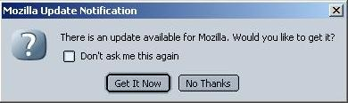
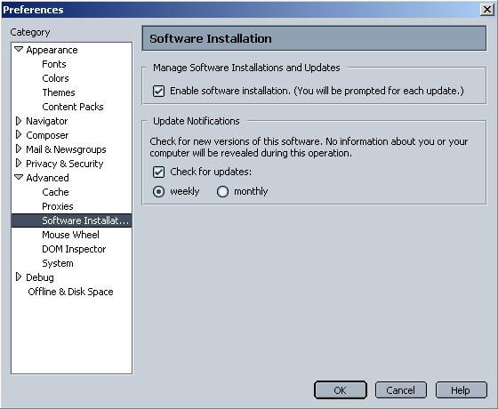

Draft Specification
Update Notifications
Last updated: 2002-01-15Original authors:
Dan Veditz <dveditz@netscape.com>
Kevin Murray <kmurray@netscape.com>
Contributors:
Todd Pringle <tpringle@netscape.com>
Samir Gehani <sgehani@netscape.com>
Overview |
Key Considerations |
- We will provide a means for the user to gain access to timely client availability, but not at a granular. component level. We will provide update information applicable only to the entire client application and not provide info on third party components or plugins (although this may come about in a future version of this feature).
- The client currently exhausts many system resources to launch the application. With this in mind, we will not degrade startup performance to implement this feature.
- We will provide a way for the user to opt out of notifications, but will deliver client software update notifications "on" by default.
Objectives |
- Provide a flexible, non-invasive way for users to learn of the availability of new versions of the client.
Implementation: Back End |
- Version registry keys
- Version number
- URL to get update
- Name of product update
Implementation: Front End
|

- User chooses "Get It Now": a new browser window is opened pointing to the URL provided in the afore mentioned RDF updates database.
- User chooses "No Thanks": the dialog dismisses and the check for a new version is not performed until the next week or month (depending on the user-set frequency for whic preferences are exposed as detailed below).
- User checks "Don't ask me this again": update notifications are disabled. The feature can be enabled again using the preferences exposed as detailed below.

| Preference Name | Preference Type | Preference Function |
update_notifications.enabled |
boolean |
Enable or disable update notifications:
|
update_notifications.provider.0.datasource |
string |
The URI of the datasource that contains information on the latest update for this software. This preference is useful in testing when one wants to override the default URI by setting it in a profile's prefs.js to a valid updates.rdf datasource as described above. |
update_notifications.provider.0.frequency |
integer |
The frequency with which to check for updates: specified as number of days. The "Advanced | Software Installation" preference panel exposes two frequencies: weekly (sets this preference to 7) and monthly (sets this preference to 30). |
update_notifications.provider.0.last_checked |
integer |
The timestamp when the datasource containing update information for this software was last polled. The timestamp is stored as the number of milliseconds from the UNIX epoch (January 1, 1970). |
update_notifications.provider.0.name |
string |
Currently unused but reserved for future use.
In the future if this feature is extended to a more full blown
subscription tracking mechanism then provider names can be specified
on a per index basis using the
update_notifications.provider.[INDEX].name preference
scheme.
|
Note: the
update_notifications.provider.[INDEX].* scheme has been
devised keeping in mind extensibility of the update-notifications feature to a
more full blown subscription tracking mechanism; hence the complex-seeming
scheme.